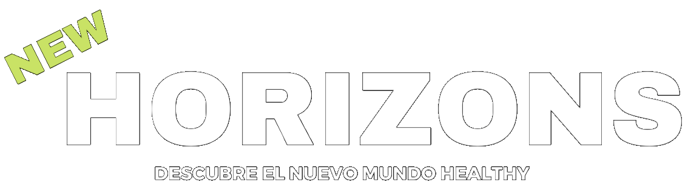
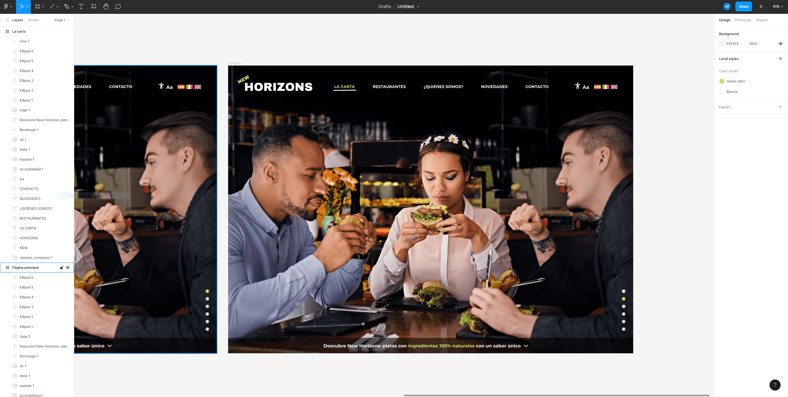
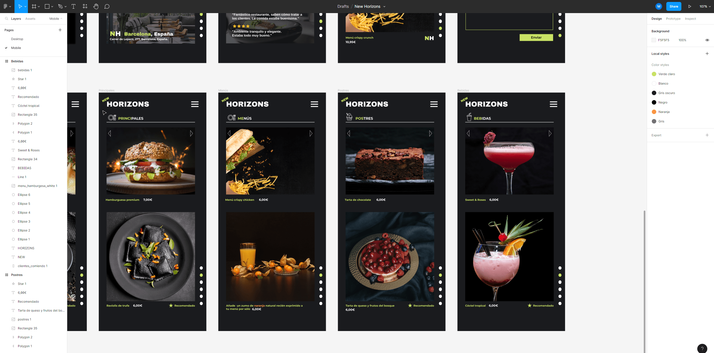
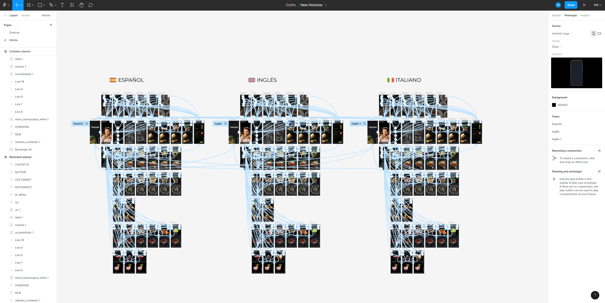
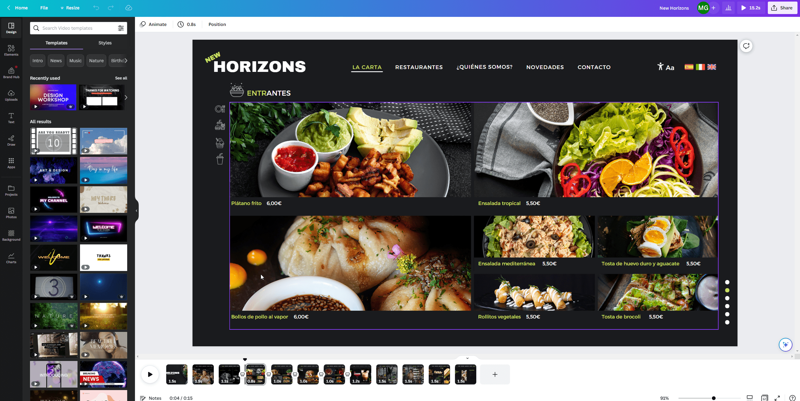

Proyecto: New Horizons - Identidad Visual y Desarrollo Web en Código Puro

OBJETIVO DEL PROYECTO
Ideación, diseño de identidad visual corporativa digital y creación y programación de la página web de una cadena ficticia de restaurantes biosaludables. Se trata de un proyecto ficticio realizado como Trabajo Final de Grado (TFG) para la Facultad de Bellas Artes de la Universidad Politécnica de Valencia. Se centra en el desarrollo y la construcción básica de la marca tanto visual como textual (branding-logotipo) para el ámbito online digital, así como en el diseño, implementación y prototipado de diferentes aplicaciones de la marca, basado en la experiencia de usuario (tarjetas digitales de networking, web versión escritorio y mobile). El prototipo de la web es adaptable y ha sido realizado con lenguajes HTML5, CSS3 y Javascript.
PROCESO DE TRABAJO
1
Se realizó un estudio UX-UI avanzado donde se analizó la situación actual
de la hostelería en España y en Europa.
También se profundizó en el
potencial del proyecto y las oportunidades que podría tener New Horizons
en un mercado tan competitivo.
Se realizaron los siguientes estudios:
Benchmarking
DAFO
Desk Research
Research Question
User Persona
Customer Journey
Matriz de necesidades
Mapa de empatía
MoSCoW
In / Out
Matriz de utilidad y viabilidad
Sitemap
2
Se diseñó un prototipo funcional y visual con Figma donde se implementaron las funciones básicas de la web. El prototipo se realizó tanto en formato desktop como en formato mobile.
3
Se diseñó la identidad visual corporativa de la empresa. Se estableció el naming, el logotipo y el eslógan de New Horizons. También se configuró la metáfora visual y la dirección artística de la web, donde se seleccionó la tipografía y la paleta de colores.
4
Por último, se diseñó y programó la página web final utilizando HTML, CSS y JavaScript vanilla, basándose en el prototipo y los diseños previos.
PROGRAMAS Y SOFTWARE
HTML5
CSS3
JavaScript
Figma
Canva
Visual Studio Code

ILoveIMG
GALERÍA DE IMÁGENES



